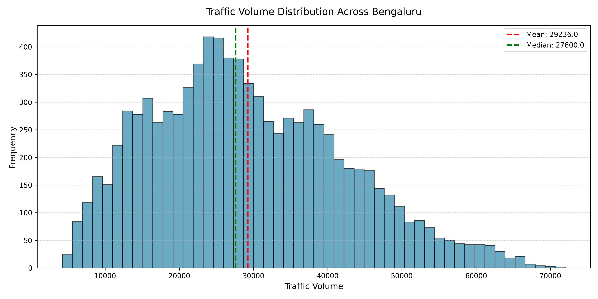
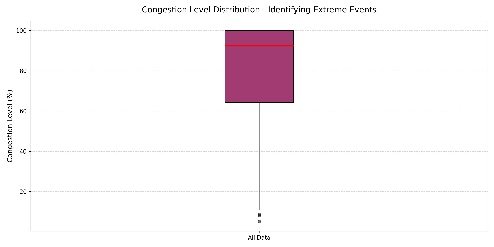
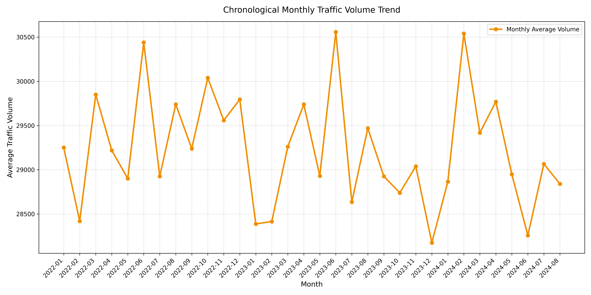
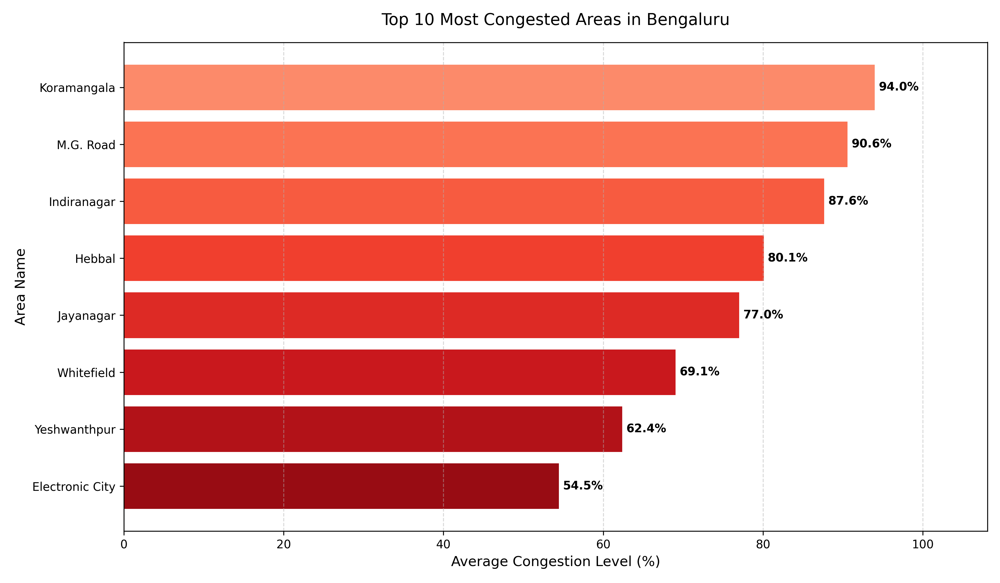
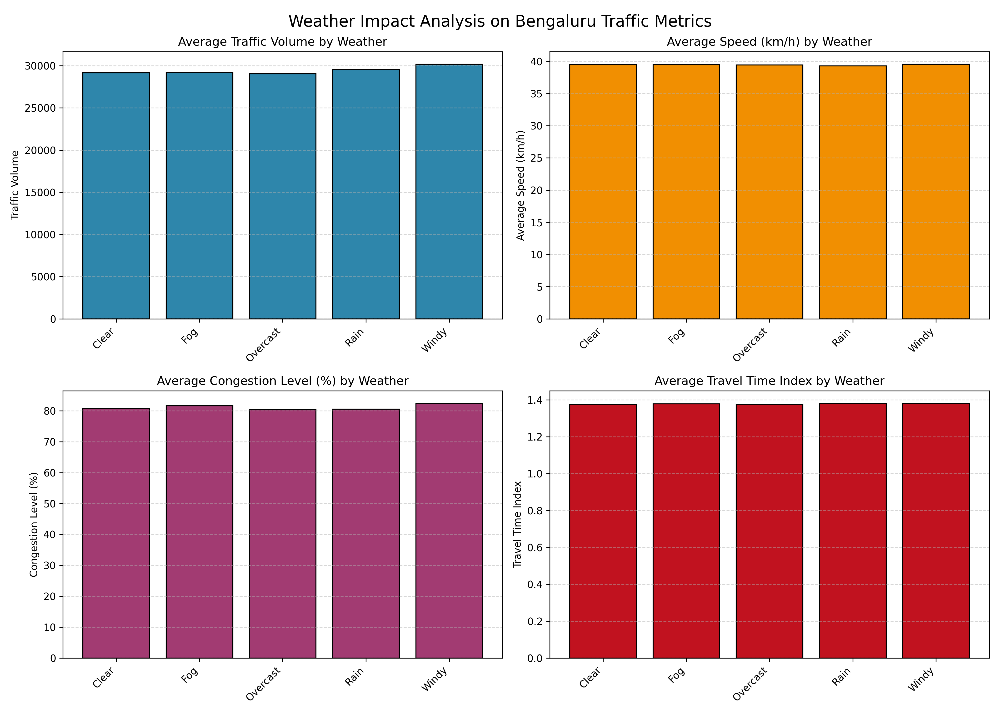
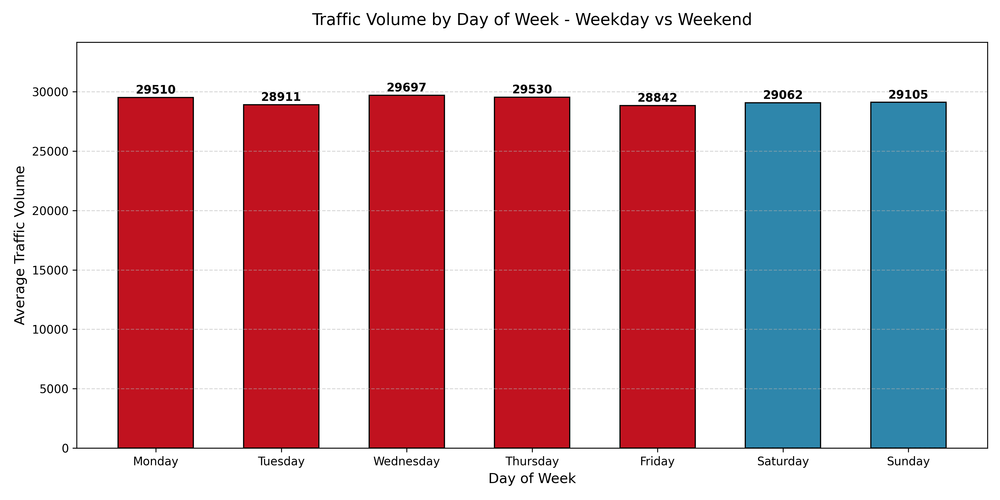

Bengaluru Traffic Congestion Analysis
Data-driven insights for smarter urban mobility
8,936
Records
10+
Areas
2022–2024
Date Range
Koramangala
Top Hotspot
Problem Statement
Understanding Bengaluru's urban grid congestion problem
Bengaluru, known globally as the tech hub of India, has witnessed unprecedented economic growth and urbanization over the past few decades. However, this growth has come at a massive cost to its transportation infrastructure. The city suffers from chronic, severe traffic congestion that results in billions of hours lost, millions of liters of wasted fuel, and significant environmental degradation.
This analysis explores the severe traffic gridlock by studying the daily and geographical traffic parameters of key transit hubs. The rapid expansion of vehicles outstripping historical road capacities has created chronic issues where minor increases in volume cross capacity thresholds and trigger total speed collapse.
By exploring historical trends, geographical hotspots, weather effects, and roadway properties, this project aims to diagnose key pressure points and provide actionable, evidence-based recommendations.
Analysis Objectives
- Examine historical traffic trends and identify long-term patterns across months.
- Identify the most congested bottleneck coordinates and hotspots across Bengaluru.
- Quantify the impact of rainy weather conditions on traffic speeds and grid delays.
- Evaluate weekday versus weekend traffic variations and calculate commute deviations.
- Model the traffic volume-speed relationship to predict critical capacity breakdown levels.
Dataset Details
Overview of the data structure, features, and quality metrics
Feature Schema
| Feature Name | Data Type | Description |
|---|---|---|
date |
Datetime | Date of traffic observation (YYYY-MM-DD). |
area_name |
Categorical | The locality/area in Bengaluru (e.g., Koramangala, Indiranagar). |
road_intersection_name |
Categorical | The specific intersection or road name. |
traffic_volume |
Integer | Estimated vehicle count during the observation interval. |
average_speed |
Float | Average speed of vehicles traversing the road in km/h. |
travel_time_index |
Float | Ratio of travel time during congestion compared to free-flow conditions. |
congestion_level |
Float | Estimated percentage level of congestion (0% - 100%). |
road_capacity_utilization |
Float | The ratio of volume to maximum road capacity. |
incident_reports |
Integer | Number of active traffic incidents (crashes, breakdowns) reported. |
environmental_impact |
Float | Estimated emissions index calculated from volume and speed. |
public_transport_usage |
Float | Estimated share of public transport commuters on this corridor. |
traffic_signal_compliance |
Float | Average signal compliance index. |
parking_usage |
Float | Average parking slot utilization rate. |
pedestrian_and_cyclist_count |
Integer | Non-motorized user count in the zone. |
weather_conditions |
Categorical | Weather at observation (Clear, Rain, Fog, etc.). |
roadwork_and_construction_activity |
Categorical | Active construction markers (Yes / No). |
Data Quality Report Summary
| Data Quality Metric | Before Processing | After Processing | Cleaning Action Applied |
|---|---|---|---|
| Missing Values | 0 | 0 | No missing values found in raw dataset. Column types verified. |
| Duplicate Rows | 0 | 0 | No duplicate observations found in raw dataset. |
| Column Names | Non-standardized (Mixed spaces/casing) | Standardized (Lowercase, snake_case) | Converted to lowercase and replaced spaces and slashes with underscores. |
Data Cleaning Summary
Grounded pipeline actions ensuring statistical validity
| Metric | Before | After |
|---|---|---|
| Rows | 8,936 | 8,936 |
| Missing Values | 0 | 0 |
| Duplicates | 0 | 0 |
| Standardized Columns | No | Yes |
Project Methodology
A structured, end-to-end data science process
1. Collection
Acquiring daily traffic observations across major routes.
2. Cleaning
Validating nulls, duplicates, and standardizing schemas.
3. Feature Eng.
Extracting day of week, month, quarter, and year properties.
4. EDA
Analyzing statistical properties and correlations.
5. Visualization
Generating high-resolution plots mapping urban trends.
6. Insights
Drawing structured, data-grounded conclusions.
7. Action
Formulating prioritized, evidence-based recommendations.
Exploratory Data Analysis
Statistical visualizations mapping traffic dynamics

1. Traffic Volume Distribution
The traffic volume follows a right-skewed normal distribution with an average traffic rate centered around the middle of the range.
Average traffic volume is 29,236 vehicles, with a median of 27,600 and a wide standard deviation of 13,002 vehicles. The interquartile range (IQR) spans from 19,413 to 38,059 vehicles.
Bengaluru traffic flows are highly variable, meaning that average volume alone does not describe the frequent spikes that exceed standard road carrying capacities.
Establish dynamic arterial lanes that expand or contract based on vehicle distribution density.

2. Congestion Level Distribution
The boxplot shows that congestion is heavily concentrated in high percentage ranges, with a very tight IQR near the top.
The median congestion level is 92.39%, with the third quartile (Q3) sitting at 100.0%. There are 3 extreme low congestion events flagged as statistical outliers.
Severe congestion is the standard baseline state for most corridors, rather than an occasional event. Extreme outliers represent rare free-flow conditions.
Prioritize macro-level demand reduction strategies rather than local bottleneck fixes, as high congestion is systemic.

3. Chronological Monthly Traffic Trend
Traffic volumes show distinct fluctuations month-over-month throughout the 2022–2024 time period, with specific seasonal variations.
Traffic volume peaked at 30,558 vehicles during June 2023 and reached its minimum of 28,174 vehicles in December 2023. Hourly analysis could not be performed because the dataset only contains daily timestamps.
Chronological trends capture overall traffic density growth and long-term network demand shifts. Hourly analysis could not be performed because the dataset only contains daily timestamps.
Use long-term trend data to plan infrastructure expansion and coordinate maintenance cycles during lower-demand seasons.

4. Traffic Volume vs Speed
The scatter plot shows a strong, non-linear negative relationship where average speed decays rapidly as volume increases.
Correlation coefficient is -0.3411. Average speeds reach up to 89.79 km/h under low volume but collapse to a hard floor of 20.00 km/h as volumes rise.
Once traffic volume crosses a critical threshold, speed drops precipitously to a hard floor of 20.00 km/h, highlighting a collapse in road network capacity.
Implement smart ramp metering and volume control systems to prevent the traffic density from crossing the critical collapse threshold.

5. Top 10 Most Congested Areas
Congestion is highly concentrated, with a subset of areas having average congestion levels exceeding 50%.
Koramangala is the most congested area at 93.99%, followed by M.G. Road at 90.58% and Indiranagar at 87.64%, while Electronic City is the lowest at 54.45%.
Key IT hubs and dense commercial zones represent the highest congestion levels in the city, acting as focal points for transit delay propagation.
Because Koramangala, M.G. Road, and Indiranagar account for the highest congestion levels, infrastructure investment should be prioritized in these locations.

6. Weather Impact Analysis
Average traffic volume, speed, congestion, and travel time index remain uniform across different weather conditions.
Average congestion is 80.54% under Rainy conditions vs 80.72% under Clear conditions (a difference of -0.23%). Average speed is 39.28 km/h in rain vs 39.47 km/h in clear weather.
Weather conditions show only minor variation in congestion levels within this dataset, suggesting location and traffic volume are stronger predictors.
Maintain standard road designs and signal timings during rain, but focus on drainage at major hotspots to prevent localized flooding from causing blockages.

7. Traffic Volume by Day of Week
Traffic volume remains consistently high throughout the entire week, with weekends only slightly lower than weekdays.
Average weekday traffic volume is 29,297 vehicles, while weekend volume is 29,084 vehicles, representing a marginal difference of 0.73%.
Weekday traffic is only marginally higher, suggesting congestion is persistent throughout the week due to retail, entertainment, and leisure travel matching commute volumes.
Enforce weekday-level traffic management and policing schedules on weekends to handle the persistent high volume.
Key Findings
Quantified metrics and structural conclusions
Temporal Analysis Limitation
Recommendation: Deploy local sub-daily telemetric traffic logging units to capture hourly commute variations.
Hotspot Areas
Recommendation: Prioritize high-capacity mass transit and roadway improvements specifically at these major economic hubs.
Weather Impact
Recommendation: Focus dynamic routing resources on geographic bottlenecks rather than weather events.
Weekday vs Weekend
Recommendation: Enforce weekday-level traffic policing and routing plans on weekends to manage persistent leisure/retail volumes.
Volume-Speed Relationship
Recommendation: Introduce smart congestion pricing zones to disincentivize single-occupancy vehicle travel during high-volume spikes.
Strategic Conclusions
The data clearly demonstrates that Bengaluru's traffic congestion is not uniform. It is heavily localized around specific economic hotspots like Koramangala, M.G. Road, and Indiranagar, and displays minimal variation across weather conditions or weekday-weekend cycles.
Furthermore, weather acts as a minor disruptor relative to localized road design bottlenecks. When rainfall occurs, congestion levels change by only -0.23% in our dataset, showing that capacity density and geographic hotspots are much stronger predictors of congestion.
Addressing this gridlock requires moving away from adding raw road capacity (which induces more demand) and instead focusing infrastructure investments, mass transit routing, and demand management directly on these high-congestion economic zones.
Strategic Recommendations
A phased, actionable roadmap for Bengaluru's transport grid
Tactical Interventions
- Deploy extra traffic marshals and response teams to Koramangala, M.G. Road, and Indiranagar junctions during commute hours.
- Conduct maintenance checks on road drainage systems at major hotspots to prevent monsoon gridlocks.
- Launch public awareness campaigns for signal compliance and lane discipline.
Systemic Optimizations
- Incentivize large corporate parks to stagger office login/logout times by 1-2 hours.
- Establish dedicated bus corridors and micro-mobility stations connecting to major metro hubs.
- Introduce smart parking systems to reduce cruising traffic searching for parking spaces.
Structural Reforms
- Because Koramangala, M.G. Road, and Indiranagar account for the highest congestion levels, infrastructure investment and metro rail expansions should be prioritized in these locations.
- Implement congestion pricing zones in central business districts during peak times.
- Transition to unified, AI-driven smart traffic management systems.
Project Limitations
Documenting constraints to maintain research integrity
- Daily Timestamps Only: The source dataset contains only daily-level dates (YYYY-MM-DD). Hourly traffic analysis was not possible.
- Limited Geographical Coverage: The dataset covers a limited set of Bengaluru areas (8 key areas), which may not capture outlying residential bypass roads.
- No Incident Log: External events such as accidents, vehicle breakdowns, or public demonstrations are not recorded, though they heavily drive traffic bottlenecks.
- Public Transit Integration: There is no connection with rail or bus ticketing volumes, limiting multi-modal transit analysis.
Executive Summary
Key statistics and primary urban mobility conclusions
8,936
Dataset Records
Koramangala (93.99%)
Top Hotspot
Minimal (-0.23%)
Weather Impact
0.73% Higher
Weekday vs. Weekend Traffic
-0.3411
Volume-Speed Correlation
Primary Conclusion
Congestion in Bengaluru is driven more by geographic hotspots and traffic density than by weather conditions or workweek cycles. High-capacity mass transit systems and localized infrastructure interventions should be focused directly on major tech hubs like Koramangala, M.G. Road, and Indiranagar, which consistently experience average congestion levels above 85% regardless of weather or day of the week.
About the Project
Technologies, authorship, and repository details
Project Profile
This data science project was developed to complete an end-to-end traffic analysis, utilizing statistical modeling and visualization to deliver urban planning recommendations for Bengaluru.
Author: Applied Data Science Student
License: Educational Purposes Only